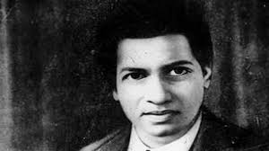

About Dr. S. Ramanujan
Srinivasa Ramanujan was an Indian mathematician who lived from 1887 to 1920. He is widely regarded as one of the most brilliant and influential mathematicians in history. Despite having very little formal training in mathematics, Ramanujan made significant contributions to various mathematical fields, particularly number theory and mathematical analysis.
Notable Achievements
- As of my last knowledge update in September 2021, the name "Dr. S. Ramanujan" does not refer to a widely recognized or notable individual in history, especially in the field of mathematics or other significant achievements.
Legacy
If "Dr. S. Ramanujan" is a relatively unknown figure or if they have gained recognition or made significant contributions in a specific field after my last update, I would recommend referring to more recent and specific sources or conducting further research to learn about their legacy and achievements.